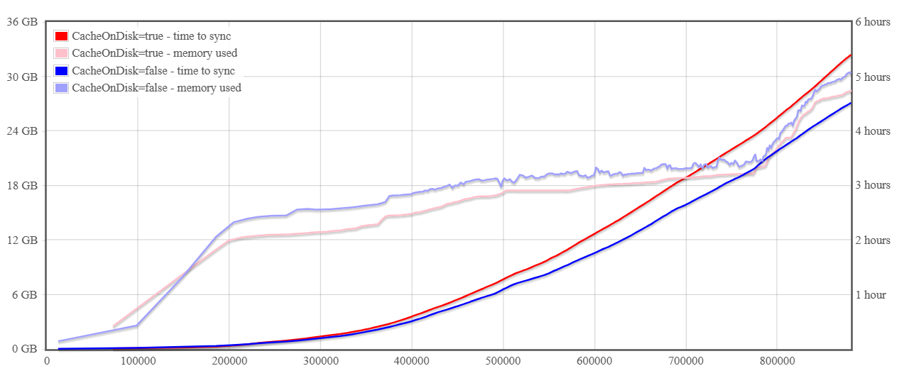
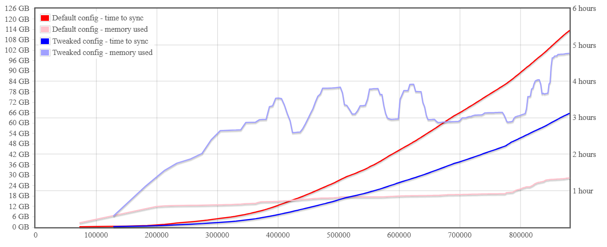
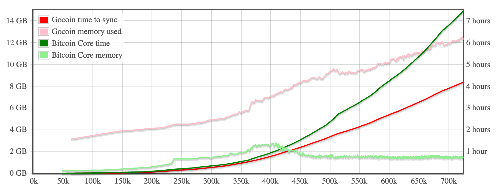
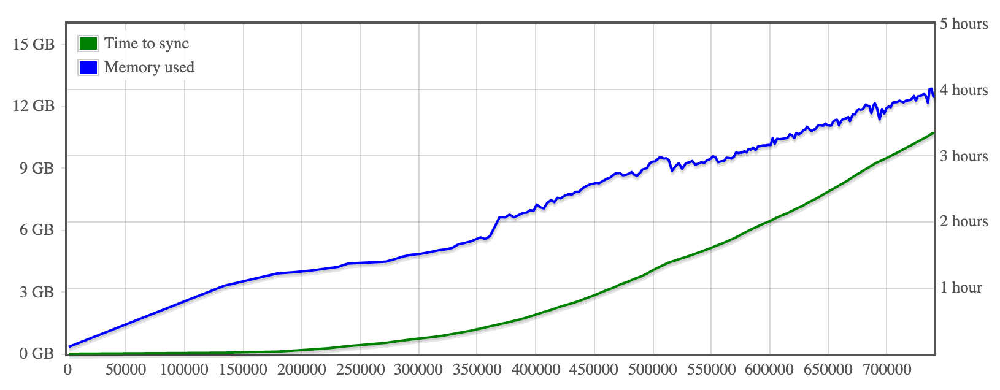
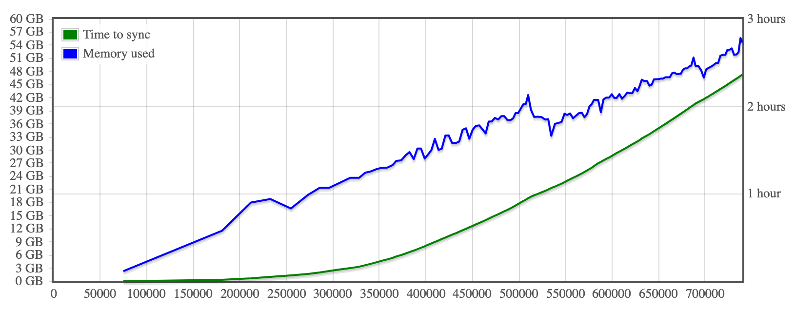
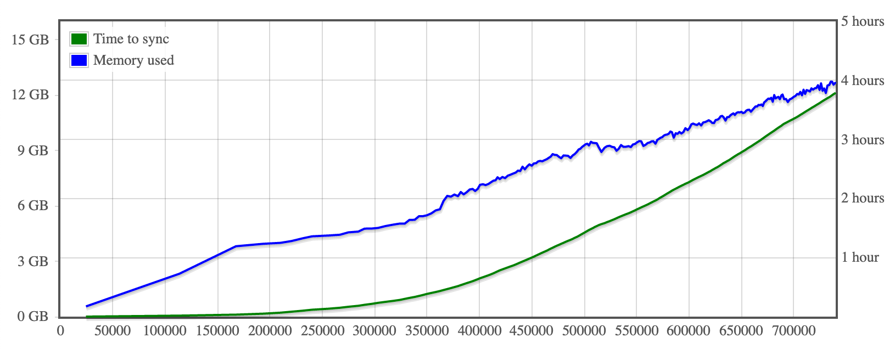
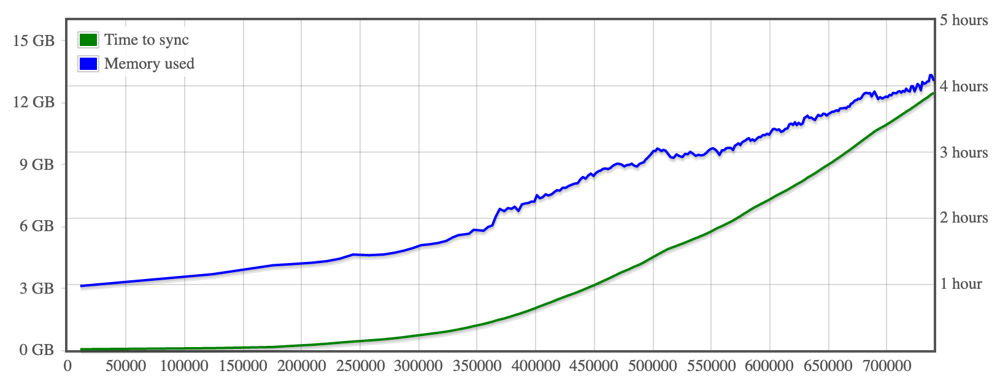
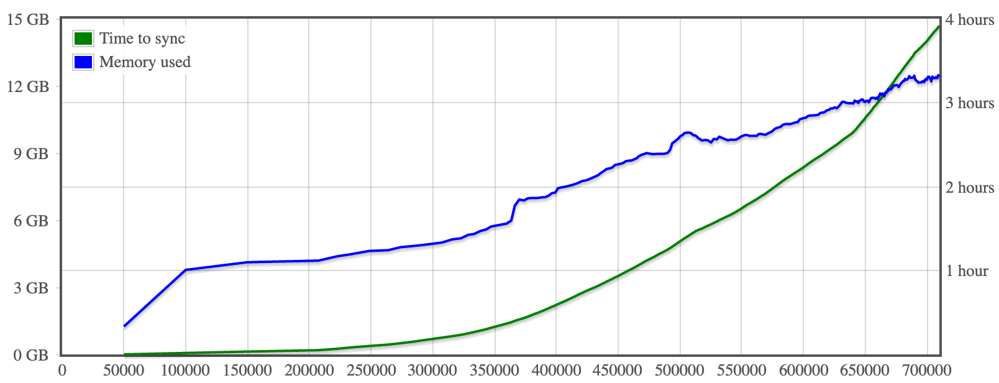

Performance
Charts below present system memory and time needed to sync BTC block chain up to the given block number.
Note:
Gocoin uses (configurable) LastTrustedBlock to avoid verifying scripts from all blocks known as valid.
Referenced Bitcoin Core uses an identical mechanism (configurable with assumevalid parameter).
Both implementations come with a recent trusted block built into their code (no need to configure them explicitly).
Gocoin 1.11.0, built with Go 1.23.4
Benchmarks were run on Hetzner dedicated server
with 3.2GHz Intel i7-8700 CPU, 128GB RAM, 2x1TB SSD and 1Gbit internet connection,
running Debian 12 (bookworm).
Effect of Memory.CacheOnDisk config value on blockchain sync speed

Possible chain sync speed with a tweaked configuration

Changed config values:
Memory.GCPercTrshold: 300
Memory.CacheOnDisk: false
MaxSyncCacheMB": 2500
CompressBlockDB: false
Gocoin 1.10.1, built with Go 1.18.3
Dedicated server with 3.4GHz Intel i7-6700 CPU and HDD
With comparision to Bitcoin Core 23.0:

Both the clients were using their default configuration.
Dedicated server with 3.6GHz Intel i7-7700 CPU and SSD
Default config:

Time needed to re-build UTXO database from blocks stored on the disk: 1.2 hours
(up to block #700000)
Tweaked config:

Changed config values:
Net.ListenTCP: false
Net.MaxOutCons: 20
Memory.GCPercTrshold: 300
Memory.UseGoHeap: true
Memory.CacheOnDisk: false
AllBalances.AutoLoad: false
Stat.NoCounters: true
Dedicated server with 3.4GHz Intel i7-6700 CPU and SSD
Default config:

Time needed to re-build UTXO database from blocks stored on the disk: 1.3 hours
(up to block #700000)
Dedicated server with 3.4GHz Intel i7-4770 CPU and HDD
Default config:

Time needed to re-build UTXO database from blocks stored on the disk: 1.4 hours
(up to block #700000)
Tweaked config:

Time needed to re-build UTXO database from blocks stored on the disk: 1.3 hours
(up to block #700000)
Changed config values:
Net.ListenTCP: false
Net.MaxOutCons: 20
Memory.GCPercTrshold: 100
Memory.UseGoHeap: true
Memory.CacheOnDisk: false
AllBalances.AutoLoad: false
Stat.NoCounters: true
Gocoin 1.10.0, built with Go 1.17.3
Dedicated server with 3.5GHz Xeon E3-1270 v3 CPU and SSD
Default config:

Time needed to re-build UTXO database from blocks stored on the disk: 1.6 hours
(up to block #700000)
Dedicated server with two 1.7GHz Xeon E5-2650L v2 CPUs and HDD
Default config:

Time needed to re-build UTXO database from blocks stored on the disk: 2.6 hours
(up to block #700000)